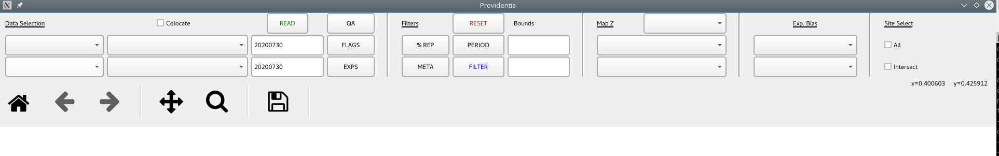

FAQ
If you encounter any error, please check the FAQ. For other problems, you can create an issue in Github or contact us directly.
Providentia’s graphic interface appears distorted/magnified
For some particular cases, it can happen that when the application is launched, the graphics of the tools appear weird, as if magnified, like in the following picture:

The solution to this issue is running the command export QT_AUTO_SCREEN_SCALE_FACTOR=0 before you launch the application:
export QT_AUTO_SCREEN_SCALE_FACTOR=0
./bin/providentia
ModuleNotFoundError: No module named ‘configargparse’ on workstations
This indicates that the modules have not been loaded, at this moment Providentia cannot be used from the workstations.
Fatal error when cloning Providentia on HPC
This error here:
fatal: unable to access 'https://github.com/BSC-ES/providentia.git/': Failed to connect to earth.bsc.es port 443: Connection timed out
happens when you connect to a node that has no internet connection. If you are on MN5, try cloning Providentia from glogin4, the only one that can connect.
HDF error on HPC
On days where gpfs is full and there is no available disk space, we get this error when trying to interpolate. To avoid this, we recommend using Providentia locally. These are the steps to be followed:
Clone the Providentia repository using
git clone https://github.com/BSC-ES/providentia.git.Open the dashboard using
/bin/providentia, this will create the conda environment in your machine.Add your model ID in
settings/interp_models.yamlso that Providentia can know where to download the data from.Use the download mode to download the observations and models to interpolate by
./bin/providentia --config='/path/to/file/example.conf' --download. The data will be downloaded into the paths defined insettings/data_paths.yaml.After downloading the data do the interpolation as usual:
./bin/providentia --config='/path/to/file/example.conf' --interp.
Unknown Miniconda3/23.9.0-0 on Nord4
When using Providentia in Nord4 you might get this error:
INFO: Running on nord4...
Lmod has detected the following error: The following module(s) are
unknown: "Miniconda3/23.9.0-0"
Please check the spelling or version number. Also try "module spider ..."
It is also possible your cache file is out-of-date; it may help to try:
$ module --ignore-cache load "Miniconda3/23.9.0-0"
To avoid this issue, remember that your .bashrc file in /home/bsc/{username} needs to be as specified in the Connection setup section
Could not load the Qt platform plugin “xcb” on HPC
When testing new machines and attempting to opening the dashboard for the first time, for example Grace and the operational runs machine, we encountered this error:
qt.qpa.plugin: Could not load the Qt platform plugin "xcb" in "" even though it was found.
This application failed to start because no Qt platform plugin could be initialized. Reinstalling the application may fix this problem.
Available platform plugins are: eglfs, linuxfb, minimal, minimalegl, offscreen, vnc, wayland-egl, wayland, wayland-xcomposite-egl, wayland-xcomposite-glx, webgl, xcb.
./bin/providentia: line 542: 388441 Aborted (core dumped) python3 -u -Wi -c 'from providentia import main;main.main()'
To solve it you must have sudo permissions to install this in your system:
sudo dnf libxcb xcb-util xcb-util-image xcb-util-keysyms xcb-util-renderutil xcb-util-wm libxkbcommon libxkbcommon-x11
These are the module names for Rocky Linux.
Could not load the Qt platform plugin “xcb” on local machine
In some machines (for example, users using WSL to access Linux from Windows), we need to install qt5 and libxcb libraries:
sudo apt update
sudo apt install --reinstall libxcb-xinerama0 libxkbcommon-x11-0 libx11-xcb1 libxrender1 libxi6 libxcb1 libxext6
sudo apt install qtbase5-dev qtbase5-dev-tools qt5-qmake libqt5gui5 libqt5widgets5 libqt5core5a
Segmentation fault on Nord4
This error appears when slurm is not able to submit the job properly. This is not a problem of Providentia, but of the machine. Try again, change machines or work locally.
Why is data that I have already downloaded being redownloaded after upgrading to 3.0.0?
With the release of Providentia v3.0.0, the use of the experiment nomenclature is deprecated, instead, it will be called model. As a consequence, local directories names have changed from from exp to mod and from exp_to_interp to mod_to_interp.
If you are currently working with the latest version of Providentia locally, you may be downloading data you already had, because exp and exp_to_interp are no longer used and data is now downloaded into mod and mod_to_interp.
To automatically handle this, we added the option, --dir_merge, which detects whether a rename or a merge of directories needs to be done.
So, if you are working with the new version of Providentia, we highly recommend running this command ./bin/providentia --dir_merge